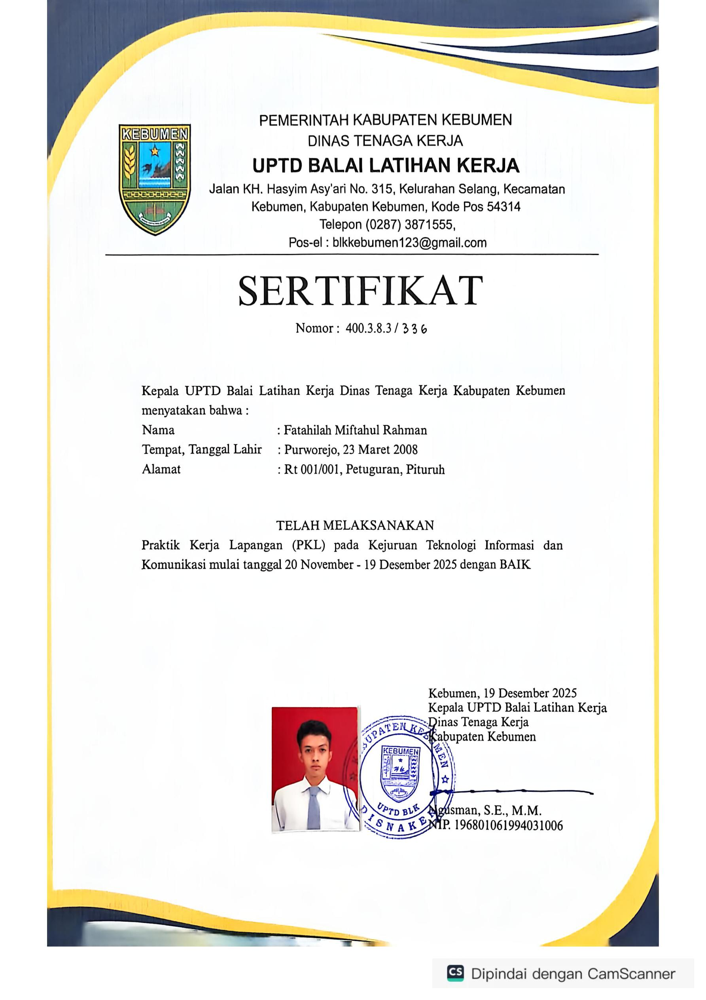
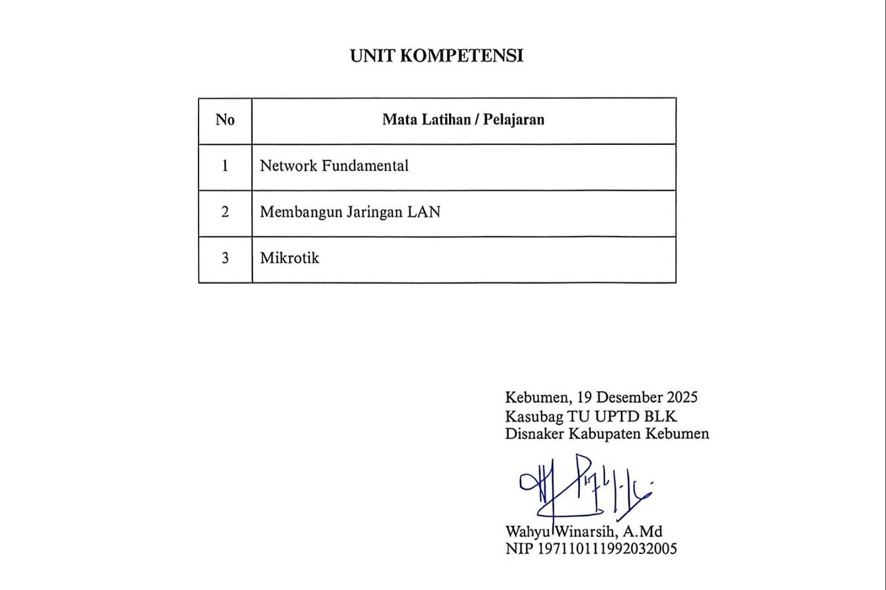
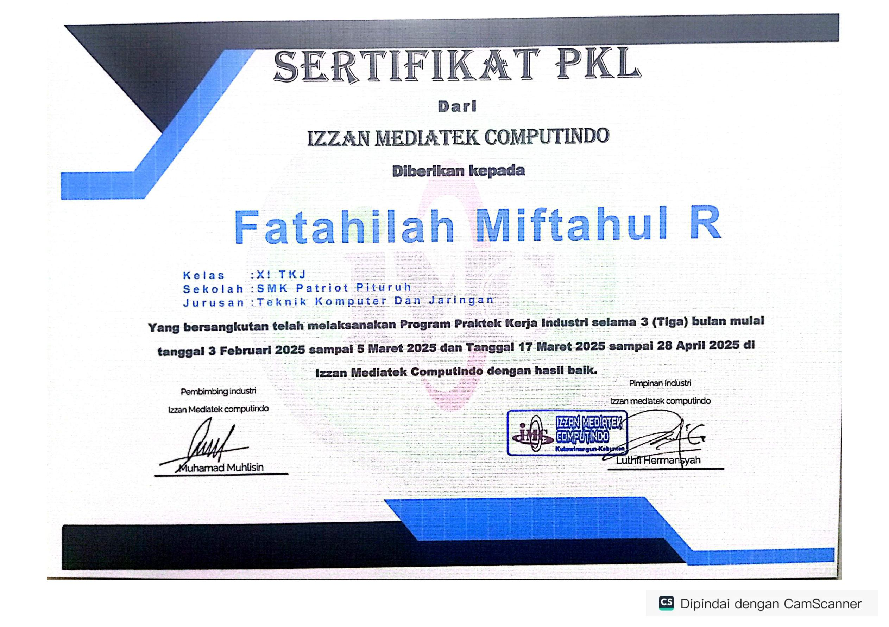
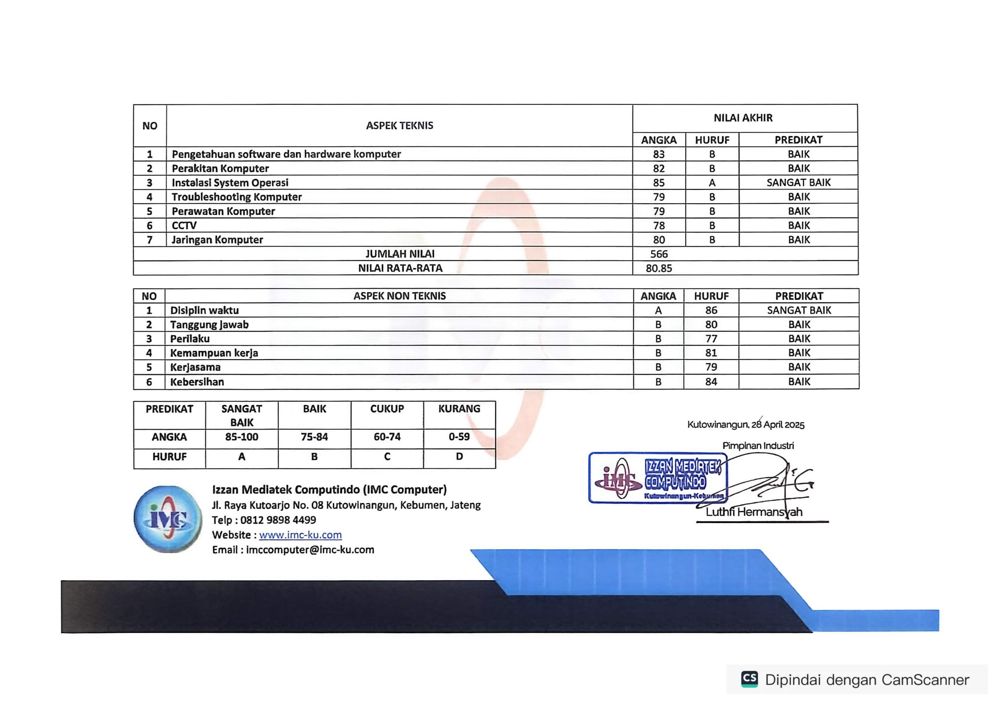

IT Network & System Administration
Fatahilah
Fatahilah
Miftahul Rahman
Connecting the future, one network at a time.

Connecting the future, one network at a time.
Tentang Saya
Saya adalah seorang alumni SMK Patriot Pituruh yang lulus pada tahun 2026, dari jurusan Teknik Komputer dan Jaringan (TKJ).
Setelah berhasil meraih Juara I LKS di bidang IT Network System Administration, fokus saya tidak cuma berhenti di infrastruktur jaringan dan kelola server aja. Belakangan ini, saya lagi seru-serunya ngulik bidang AI Prompt Engineering. Lewat hal baru ini, saya pengen cari tahu gimana cara manfaatin kecerdasan buatan buat bantu otomatisasi skrip jaringan atau sistem server biar kerjaan di industri ke depannya bisa jauh lebih efisien, cepat, dan aman.
Keahlian
Portofolio

Mendesain infrastruktur jaringan kantor 3 lantai menggunakan Cisco Packet Tracer. Proyek ini menerapkan segmentasi VLAN terpisah untuk setiap lantai, manajemen alokasi IP otomatis via DHCP Server, integrasi lokal DNS Server, serta konfigurasi satu router management khusus untuk kendali penuh administrator.

Membangun jaringan gateway fungsional pada RouterBoard MikroTik lewat Winbox. Konfigurasi mencakup setup IPv4 address, aktivasi dan manajemen WLAN interface untuk akses wireless, implementasi Firewall NAT agar jaringan lokal terhubung ke internet, konfigurasi DNS dan DHCP Server, serta pengujian stabilitas koneksi via terminal.
Sertifikat


Bukti kelulusan Praktik Kerja Lapangan pada Kejuruan Teknologi Informasi dan Komunikasi yang diterbitkan resmi oleh Dinas Tenaga Kerja Kabupaten Kebumen.

Daftar Unit Kompetensi resmi dari UPTD BLK Kebumen yang menyatakan fokus program pelatihan dan praktik pada materi Network Fundamental, Membangun Jaringan LAN, serta MikroTik.

Bukti pelaksanaan program Praktek Kerja Industri selama 3 bulan di Izzan Mediatek Computindo dengan hasil penilaian baik di bidang Teknik Komputer dan Jaringan.

Transkrip kompetensi teknis yang mencakup perakitan & troubleshooting komputer, instalasi sistem operasi (Predikat Sangat Baik), konfigurasi CCTV, serta jaringan komputer.